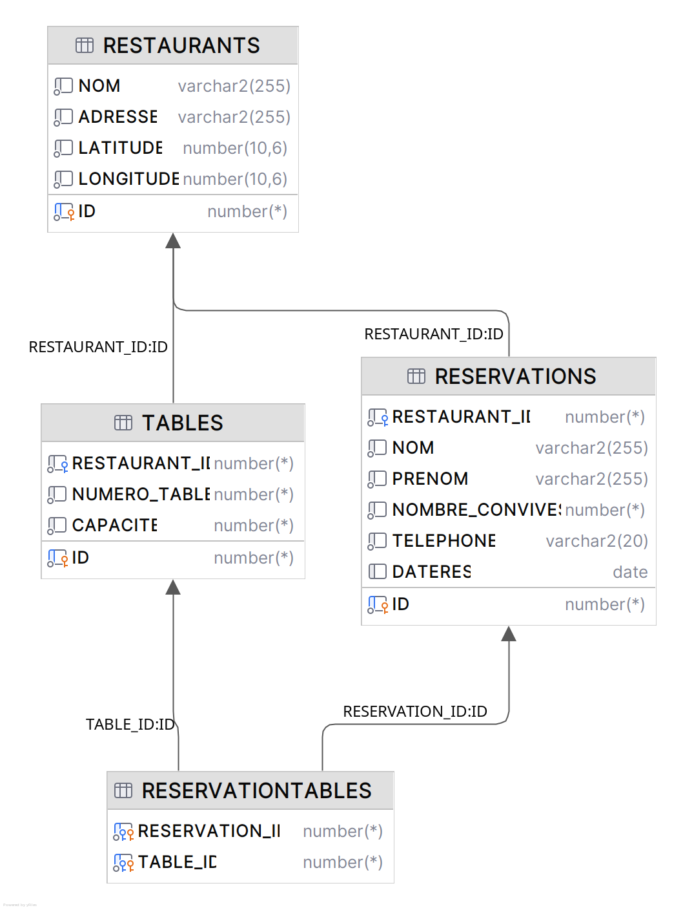

Cette SAE avait pour but de récupérer différentes données à l’aide de plusieurs services :
Voici le lien du service web :
https://api.cyclocity.fr/contracts/nancy/gbfs/gbfs.jsonCe service web renvoie des données sur les stations de vélibs de la ville de Nancy.
Pour récupérer ces données, nous utilisons la méthode fetch de JavaScript et, à partir des données,
nous créons des marqueurs de couleur bleue sur la carte Leaflet.
Nous avons pris la décision d’ajouter un bouton permettant de charger ces marqueurs afin d’éviter de surcharger la carte avec les autres données.
Dans ce cas, c’est donc le JavaScript du site lui-même qui récupère les données.
Pour ce service, nous avons dû créer une base de données, dont voici le schéma :
Pour récupérer les données de cette base, nous avons créé un service BD en Java.
Ce service permet de consulter les restaurants de la table, mais aussi de réaliser une réservation.
Il implémente également la bibliothèque RMI et propose une méthode permettant de s’enregistrer sur un service central, qui sera utile par la suite.
Voici le lien de ce service :
https://carto.g-ny.org/data/cifs/cifs_waze_v2.jsonCe service contient des données d’événements tels que des chantiers ou autres perturbations pouvant affecter la circulation à Nancy.
Comme nous l’avons précisé plus tôt, il est impossible de récupérer ces données via JavaScript.
Pourquoi ?Comme vous pouvez le voir sur cette image, lorsque nous essayons de récupérer les données depuis notre site, une erreur CORS apparaît.
Cette erreur est en réalité une mesure de sécurité pour les utilisateurs. Elle empêche les domaines extérieurs à ce service de récupérer les données via un navigateur.
Cette sécurité évite qu’un autre domaine réalise des actions à l’aide des variables de session du navigateur.
Un exemple simple :
Une personne s’authentifie sur le site de sa banque et utilise un service sans la sécurité CORS. Ce service pourrait alors effectuer des actions sur le compte bancaire de l’utilisateur grâce aux variables de session (notamment celle d’authentification).
Pour contourner cette sécurité, nous passons donc par Java, qui n’utilise pas de navigateur et n’est donc pas soumis à cette restriction.
Nous avons créé un service « serviceEvenement » qui récupère les données de ce service, et permet également, comme le serviceBD, de s’enregistrer auprès d’un service central.
Enfin, pour assurer la communication entre le serviceBD, le service qui récupère les événements et le site web,
nous avons utilisé la classe HttpServer de Java.
Cette classe permet de créer un serveur HTTP en local et d’associer des routes afin de pouvoir effectuer des
requêtes fetch depuis notre site web.
En associant RMI au serveur HTTP, qui sert de service central aux deux autres services, nous pouvons récupérer à la fois les données de la base de données et celles bloquées par le service web.
Comme je l’ai dit précédemment, le serveur HTTP sert de service central pour les services de base de données et d’événements. Les échanges entre les différents services se font par des objets Java.
Ensuite, le site web interroge le serveur HTTP via les différentes routes disponibles. Le serveur utilise alors les services nécessaires pour récupérer les données et les renvoie au format JSON, afin qu’elles puissent être utilisées en JavaScript.
Pour la partie site web, il faut, en prérequis, disposer de la commande npm et exécuter un npm
install dans le dossier web du projet afin d’installer toutes les dépendances nécessaires.
Ensuite, il faut créer un fichier env.js dans un dossier js avec la structure suivante
:
Les deux derniers liens correspondent aux liens du serveur HTTP que vous devrez lancer (ici en
localhost, sinon mettez l’IP de la machine). Vous pouvez changer les ports ainsi que le nom des
routes au moment du lancement du serveur.
Ensuite, il faut utiliser la commande npm run build (toujours dans le dossier web) pour
exécuter le script de build défini dans le package.json.
Deux options sont alors possibles :
package.json avec la commande npm
run serveweb sur un serveur tel que webetuSans lancer le serveur HTTP, vous n’aurez accès qu’au premier bouton concernant les stations de vélibs.
Pour la partie back-end, if faut avoir java 21 afin de pouvoir lancer les différents scripts. Il faudra aussi
mettre creer un fichier config dans /src/src/ avec la structure suivante:
L'URL correspond au lieu utilisé pour accéder à la base de données afin de récupérer et modifier les données présentes
Il faut tout d'abord compiler les fichiers Java avec la commande javac -cp ".:lib/*" *.java.
Ensuite, il faut lancer le script avec la commandejava LancerServeur qui se trouve dans le dossier
/src. On peut ensuite lancer les deux services utilisé par le serveur afin d'afficher les données
du site avec ces deux commandes java LancerServiceBD et java LancerServiceEvent.
Le fait de ne pas lancer le de ne aps lancer les services va empêcher au site de récupérer les données relatives aux restaurants et aux accidents. Il sera aussi impossible de réserver un repas.